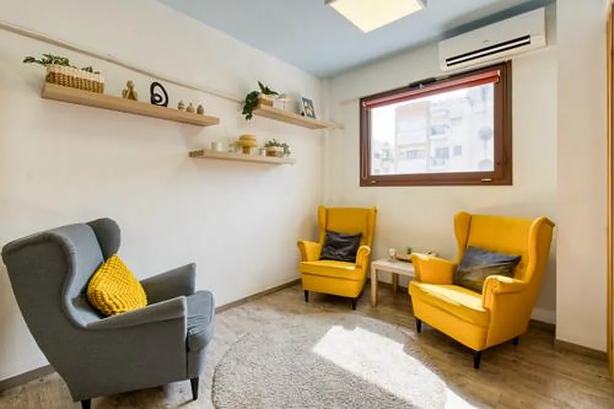
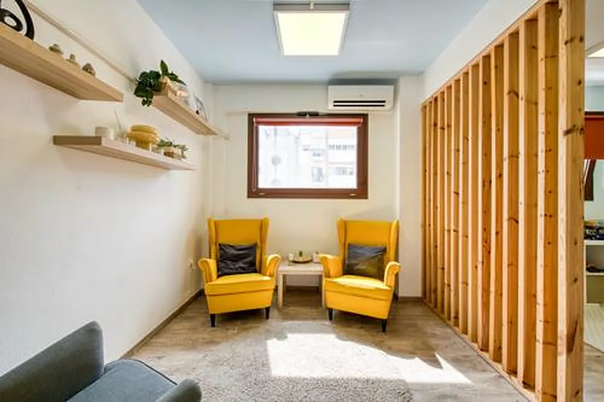

01Kalamaria · Thessaloniki · in person & online
Konstantina MpogiatziClinical Psychologist (MSc) in Kalamaria, Thessaloniki
Psychotherapy for adults with Cognitive-Behavioural Therapy — with warmth, no judgement, and an eye on the whole path that brought you here.
 Konstantina MpogiatziMSc in Clinical Psychology, Aristotle University
10/10
Konstantina MpogiatziMSc in Clinical Psychology, Aristotle University
10/10on doctoranytime · dozens of reviews
In person & onlinesessions of 50 minutes


48 Stratigou Sarafi St, Kalamaria02My approach
Cognitive-Behavioural Therapy, with depth
With adults I work mainly with CBT, also drawing on Schema Therapy and psychodynamic theory. We focus on the present — keeping in mind how experiences and relationships at different stages of life shape the way you see yourself, handle emotions and relate to others.
- 1
Cognitive-Behavioural Therapy
My main approach: we understand how thoughts, feelings and behaviour connect, and work towards clear goals.
- 2
Elements of Schema Therapy
They help us see the patterns that keep repeating — how they began and what needs they served.
- 3
Elements of psychodynamic theory
They make room for what is hard to put into words: relationships, early experiences and what stays beneath the surface.
- 4
A developmental lens
My background in developmental psychology and parent counselling sheds light on how early bonds shape later life.
03About me
Konstantina Mpogiatzi, clinical psychologist in Kalamaria
My therapeutic stance is guided by emotional availability, warmth, empathy and respect for what makes each person unique.
Licence: ΔΔΥΚΜ/Μ.Ε.Θ.526101(15495)/25-08-2021 · verified profile
I am a clinical psychologist with a private practice in Kalamaria. I studied at the School of Psychology of the Aristotle University of Thessaloniki, where I also completed my MSc in Clinical Psychology.
My clinical experience has been shaped through steady private practice in individual psychotherapy for adults, and through work with specialised mental health services: the Hellenic Centre for Mental Health and Research (E.KE.PSY.E.), the 2nd University Adult Psychiatric Clinic of the Aristotle University, the Applied Psychology Laboratory of the Aristotle University, the Alzheimer Society (SOPSY) and private specialist therapy centres.
I have completed a two-year training in Cognitive-Behavioural Therapy (CBT) for Children and Adolescents at the Hellenic Association for Behaviour Research (EEES), and I regularly attend further training in trauma, clinical psychopathology and current therapeutic practice. To keep my work at a high standard, I am in continuous training and regular clinical supervision.
Education
- MSc in Clinical PsychologyAristotle University of Thessaloniki
- BA in PsychologyAristotle University of Thessaloniki
- Two-year training in CBT for Children and AdolescentsHellenic Association for Behaviour Research (EEES)
Experience
- Clinical Psychologist, private practice, Kalamaria
- Psychologist, Hellenic Centre for Mental Health and Research (E.KE.PSY.E.)
- Psychologist, Applied Psychology Laboratory, Aristotle University
- Psychologist, 2nd University Adult Psychiatric Clinic, Aristotle University
- External associate, private specialist therapy centres
- Volunteer work, Alzheimer Society (SOPSY)
04The journey
From the first bonds to today
Who we are today has a history. Scroll along the line: therapy starts from your present difficulties, with an eye on the whole path.
- Early years
The first bonds
Early emotional bonds shape how we feel safe and how we ask for care.
- Childhood
What we learn about ourselves
Experiences and relationships form our first beliefs about who we are.
- Adolescence
Identity & relationships
We try out who we want to be; the patterns we carry meet new relationships.
- Adult life
Patterns repeat
In relationships, at work, in the way we talk to ourselves — sometimes as anxiety, sadness or feeling stuck.
- Today
Where we start
Therapy focuses on your difficulties and needs in the present — keeping the whole journey in mind.
- Therapy
Awareness, change, integration
Greater self-awareness, changing patterns that no longer serve you, working through what hurt — and integrating it into your personal story.
An illustration of how I think about therapy — every person’s path is different.
05Areas of work
Psychotherapy for adults in Kalamaria
Individual sessions of 50 minutes, in person at 48 Stratigou Sarafi St or online by video call.
-
Sessions of 50 minutes, in person in Kalamaria or online. We start from what is hard for you today and, depending on what you ask for, the work can focus on reducing symptoms, on strengthening you, or on personal growth. Based on Cognitive-Behavioural Therapy with elements of Schema Therapy and psychodynamic theory, we fit therapy to you — not the other way round.
-
Constant worry, a panic attack that makes you avoid places and situations, the fear it will happen again. We learn to understand what happens in the body and in our thinking, re-examine the interpretations that feed the fear, and gradually and safely return to what you have started to avoid.
-
When your mood drops and will not lift, when a loss or a sorrow weighs on everyday life. In therapy we make room for what you feel, identify the thoughts and habits that keep your mood low, and slowly reconnect with what matters to you.
-
Difficult or traumatic experiences can keep affecting sleep, relationships and your sense of safety. Carefully and at your own pace, we work through them so they can find a more workable place in your personal story — so they no longer define the present.
-
An inner voice that judges harshly, the feeling of not being enough, finding it hard to put your own needs first. We look at where these beliefs about yourself come from, how they were shaped by experiences and relationships, and build a fairer, steadier picture of yourself.
-
Patterns that repeat in relationships, finding it hard to trust or set boundaries, tiring conflicts. With a developmental lens we understand how early emotional bonds affect the way we relate today — and try out new, more satisfying ways.
-
A specific fear that makes your life smaller, thoughts that keep coming back and rituals you feel you must do to settle down. Cognitive-Behavioural Therapy has strong evidence here too: we move step by step, with a plan and with respect for your limits.
-
Your relationship with food and your body, as well as symptoms such as headaches, tension or stomach trouble that medicine cannot fully explain. Body and mind do not work separately: we understand what these signals express and find kinder ways to cope, without judgement.
-
If you do not live in Thessaloniki or your schedule is tight, sessions can take place by video call — with the same length, structure and confidentiality as sessions at the office.
06Reviews
In the words of people I have worked with
- In-depth exploration10
- Inspires trust10
- Experience & skill10
- Consistency10
- Approachable & friendly10
Η Κωνσταντίνα είναι εξαιρετική επαγγελματίας και ένας υπέροχος άνθρωπος, με βαθιά ενσυναίσθηση και ουσιαστικό σεβασμό απέναντι στον άνθρωπο που έχει απέναντι της. Διακρίνεται για την ευγένεια, την ηρεμία και τη διακριτικότητά της. Στέκεται δίπλα σου με βαθιά κατανόηση και αποδοχή, δημιουργώντας έναν χώρο ασφάλειας και εμπιστοσύνης, όπου μπορείς να εκφραστείς ελεύθερα και να είσαι ο εαυτός σου, χωρίς να αισθάνεσαι ότι κρίνεσαι. Έχουμε μαζί μια πορεία τριών ετών, κατά την οποία η παρουσία και η στήριξη της υπήρξαν πολύτιμες για μένα, ιδιαίτερα σε δύσκολες στιγμές. Νιώθω πραγματικά τυχερή που είναι η θεραπεύτρια μου και τη συστήνω ανεπιφύλακτα.
ΓΓεωργια18 September 2026 · doctoranytime
Ένας άνθρωπος που από την πρώτη στιγμή σε κάνει να νιώθεις ασφάλεια και ότι πραγματικά σε ακούει. Με πολλή ζεστασιά, κατανόηση και χωρίς καμία κριτική, με έχει βοηθήσει να δω πολλά πράγματα διαφορετικά. Τη συστήνω ανεπιφύλακτα.
ΕΕλίνα24 September 2026 · doctoranytime
Η Κωνσταντίνα είναι μια εξαιρετική επαγγελματίας, με πραγματικό ενδιαφέρον για τον άνθρωπο, ενσυναίσθηση και συνέπεια. Ξεχωρίζει για την αφοσίωσή της στη δουλειά της. Είναι ένας άνθρωπος που εμπνέει εμπιστοσύνη και ασφάλεια και αντιμετωπίζει κάθε άνθρωπο με σεβασμό και υπευθυνότητα. Τη συστήνω ανεπιφύλακτα!
AAlexandra24 September 2026 · doctoranytime
Από την πρώτη στιγμή ένιωσα πολύ άνετα μαζί της. Είναι ένας ζεστός και προσιτός άνθρωπος, που ακούει με πραγματικό ενδιαφέρον και χωρίς να σε κάνει να αισθάνεσαι ότι σε κρίνει. Ο τρόπος της είναι ήρεμος και ανθρώπινος και σε βοηθά να εκφραστείς με ασφάλεια. Τη συστήνω με πολλή εμπιστοσύνη.
ΣΣοφία20 September 2026 · doctoranytime
Η κυρία Μπογιατζή είναι εξαιρετική στη δουλειά της και έχω δει πολύ μεγάλη βελτίωση σε ό,τι αντιμετωπίζω με τη βοήθειά της. Είναι προσιτή και σε έκτακτες περιπτώσεις ήταν πάντα διαθέσιμη. Τηρεί απόλυτα τους κανόνες δεοντολογίας και αποτελεί παράδειγμα.
ΒΒαγια17 September 2026 · doctoranytime
Εξαιρετική ως επαγγελματίας κι ως άνθρωπος .Μου ενέπνευσε εμπιστοσύνη απ την πρώτη στιγμή και με βοηθάει πολύ στα θέματα που συζητάμε Έχουμε συμπληρώσει δυο χρόνια και συνεχίζουμε ...Τη συστήνω ανεπιφύλακτα !
ΔΔέσποινα17 September 2026 · doctoranytime
Εξαιρετική επαγγελματίας με βαθιά κατανόηση και ενδιαφέρον. Εκπέμπει ηρεμία και απόλυτο σεβασμό με αποτέλεσμα να σε κάνεις να νιώθεις ασφάλεια και σιγουριά!
SStefanos17 September 2026 · doctoranytime
Με βοήθησε πολύ σε μια δύσκολη περίοδο, εξαιρετική επαγγελματίας.
AAnastasia18 September 2026 · doctoranytime
Σωστή επαγγελματίας και πάνω από όλα άνθρωπος. Την συστήνω ανεπιφύλακτα!
ΚΚωνσταντίνα18 September 2026 · doctoranytime
Πολύ καλή εμπειρία . Ευχάριστη και βοηθητική
ΡΡΑΦΑΗΛΙΑ17 September 2026 · doctoranytime
07Questions
Frequently asked questions about therapy
Call me — we can talk it through before the first session.
210 744 4147How long is a session?
Each session lasts 50 minutes, whether in person at the office in Kalamaria or online by video call. We agree on how often to meet together, depending on what you need.
How do I book?
Call 210 744 4147 or book online through doctoranytime, either at the office or by video call. In the first session we get to know each other and talk about what brings you.
Do you offer online sessions?
Yes. Sessions take place in person and online. An online session has the same length and structure, and is a good option if you live far away or have a busy schedule.
Which approach do you use?
With adults I work with Cognitive-Behavioural Therapy (CBT), also drawing on elements of Schema Therapy and psychodynamic theory. We focus on the present, keeping your developmental path in mind.
How do I pay?
You can pay at the office by card or in cash, or online when booking through doctoranytime (Klarna is also available).
Can I cancel an appointment?
Yes, up to 24 hours before the appointment. If you paid online, the money is refunded.
Is there parking?
The office has no parking of its own; if you come by car, allow a little time to find a space in the neighbourhood.
Is everything I say confidential?
Yes. What we discuss stays between us, under the psychologists’ code of ethics — with the only exceptions being those set by law, when there is immediate danger to you or others.
08Contact
Book an appointment
Call me or book online through doctoranytime — at the office in Kalamaria or by video call.
- 210 744 4147
- 48 Stratigou Sarafi St, 551 32 Kalamaria, Thessaloniki
- Online sessions by video call


How to get here
The office is at 48 Stratigou Sarafi St, in Kalamaria, Thessaloniki (postcode 551 32). It has no parking of its own — if you come by car, allow a little time to find a space in the neighbourhood.
Directions in Google Maps